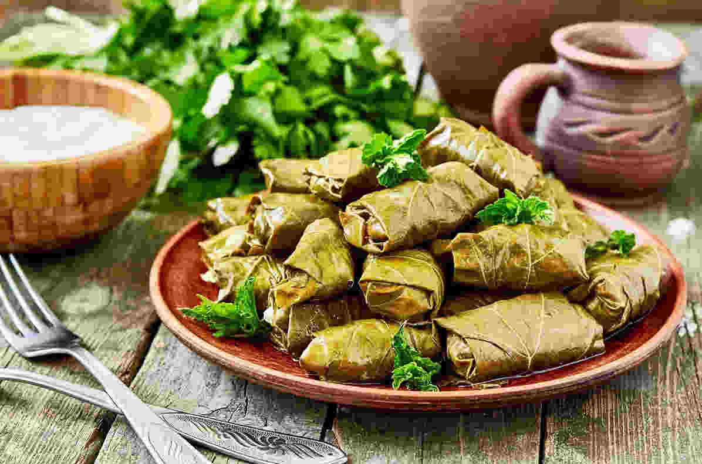
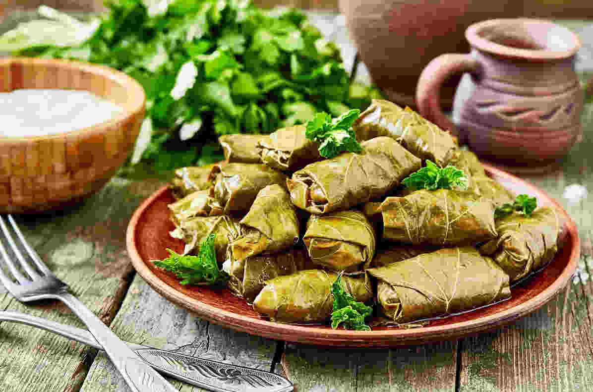

Armenian Meals:
Where Heritage Meets Flavor!
MEAL SUGGESTIONS
MEAT
 


SOUPS
DRINKS

DESSERTS

Nearby
Restaurant SUGGESTIONS
GREEN LANJ
Cafe with soft puffs in the open air in the greenest park in the city. Here you can relax after a walk, try American pizza with fried onions, sandwiches and refreshing milkshakes.
Click Here For Locations
SAS FOOD COURT
SAS Food Court first introduced the concept of “Ready to Eat” in Armenian reality. This comfortable place brings together people who can try a variety of dishes, pizzas with home-made recipes, stuffed potatoes, sweets, and more.
Click Here For LocationsKARAS
KARAS was founded in 2005 in Armenia. Currently, Karas is one of the biggest food chains operating in Armenia. It has 16 service points in capital Yerevan and 2 service points in resort cities of Armenia.
Click Here For LocationsEL GARDEN
Whether you want to lose yourself amidst the swaying trees or find yourself in a stunning garden far from the city hustle and bustle, come to EL Garden and have a memorable day enjoying delicious dishes and drinks in the open air.
Click Here For LocationsTUMANYAN SHAURMA
Tumanyan Shawarma was founded in 1998: The first branch operated at the intersection of Tumanyan and Abovyan streets. After a short time, becoming a favorite place of Yerevan residents, there was a need to expand In 2013, the second branch of "Tumanyan Shawarma" was opened in the Arabkir administrative district, at Komitas 50/50.
Click Here For Locations
GENACVALE
Being one of the first representatives of Georgian cuisine, “Genatsvale” tavern played a great role in the spread of Georgian cuisine in Yerevan, from the day of its creation it sought to combine the best traditions of Armenian and Caucasian cuisine, creating a warm and hospitable atmosphere. By the way, our chain of restaurants also has a delivery service
Click Here For LocationsPersonal Reviews
On Restaurants
@lullabiestie
On 24th of May Armenian Genocide Remembrance Day we decided to take our foreign friend to see the Tsitsernakaberd Memorial Complex. After climbing to the complex, laying the flowers and honoring the memory of the dead, we decided to go down to the Tumo Park and have lunch in Green Lanj. We had a great time there, the food was delicious, so this place is associated with pleasant memories.
@sun7shine
On 10-18 of July the IBO was held in Karen Demirchyan Sport/Concert Complex and I was participating there as a volunteer. Every day from 7am to 8pm we were doing some work there and every time we were having lunch at SAS Food Court ‘cause it was nearby and everyone could find food to their taste. I highly recommend this place for a quick lunch with colleagues!
@yourtalkless
I am an immigrant from Russia, I have already lived in Yerevan for 10 months and since the first day Karas is my favorite place to eat traditional Armenian meals. It really gives that homecook food vibes and has a really big choice of dishes. Of course, it also serves fast food and other staff, but homemade recipes are THE BEST!
@p1stachio
This restaurant is associated with one of the best moments of my life. My boyfriend who I've been dating for 5 years proposed to me here. He organized a romantic dinner and El Garden chefs helped him in his plan of putting the engagement ring in my favorite dessert “Coconut Crush”. The food was so tasty and decorations were incredible - everything made this moment imprint in my memory.
@bubblebeep
Tumanyan Shaurma is an atmospheric place with an open kitchen, it is interesting even just to watch how skillfully the chefs cook. The order itself is a little inconvenient, but if it is easier and as an element of atmosphere and culture, this does not interfere. On the contrary, the chefs are very attentive and will listen to all your wishes for the dish. The interior is standard for fast food, but the street is quite nice. Loved this place very much.
@d0perfectly
This restaurant from Genacvale chain on Kievyan street is probably the most undervalued one, however this is the favorite spot for us to gather with friends and families. Last time we were celebrating a birthday and were really satisfied with the service and quality of dishes. The pricing policy is also very good here.